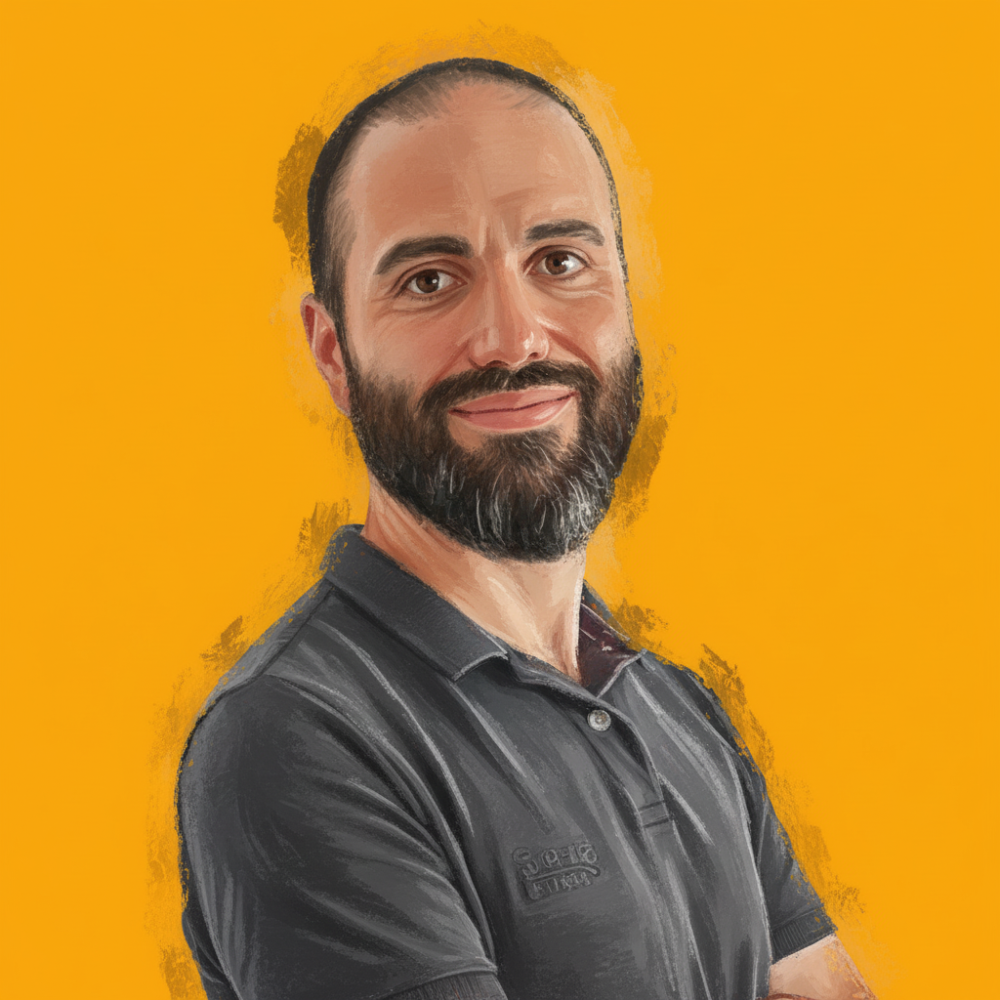

Roberto Abelleira
IT Support & Operations Specialist | Software Development Background (Java, SQL) | Enterprise Environments
IT Support & Operations Specialist | Software Development Background (Java, SQL) | Enterprise Environments

Descripción corta del proyecto y qué problema resuelve.
Descripción corta del proyecto y qué problema resuelve.
Descripción corta del proyecto y qué problema resuelve.
Descripción corta del proyecto y qué problema resuelve.
sept 2025 – dic 2025
ene 2021 – ago 2023
nov 2019 – ene 2021
mar 2019 – nov 2019
Prácticas y proyectos académicos centrados en Android.
Soy profesional IT con más de 10 años de experiencia en soporte técnico y operaciones, participando en proyectos para empresas como Microsoft, Apple y Adobe. Formado en Desarrollo de Aplicaciones Multiplataforma (DAM), combino soporte IT con conocimientos en Java, SQL y desarrollo web, aportando valor tanto en operaciones como en posiciones técnicas.
Soy proactivo, adaptable y orientado al trabajo en equipo, con capacidad de comunicación y aprendizaje continuo, y disfruto aportando soluciones que integren infraestructura y software de manera eficiente.